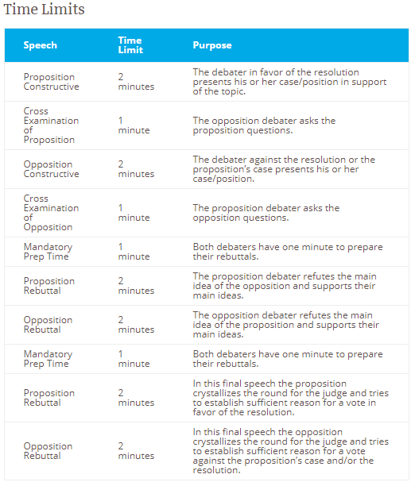

About Us
Clovis North Forensics is a high school speech and debate team at Clovis North High School in Fresno, California. Every week on Tuesdays and Thursdays, students prepare for upcoming tournaments in Mr. Steele's classroom through student lectures, debates, etc. Our team has won numerous awards for our performance in tournaments at the local, state, and national level.
Speech Events:
Dramatic Interpretation
Using a play, short story, or other published work, students perform a selection of one or more portions of a piece up to ten minutes in length. With a spotlight on character development and depth, this event focuses on the student’s ability to convey emotion through the use of a dramatic text. Competitors may portray one or multiple characters. No props or costumes may be used. Performances can also include an introduction written by the student to contextualize the performance, and state the title and the author.
Dramatic Interpretation, contrary to its name, is not all about drama. While dramatic elements are key aspects of the event, melodramatic, or overly-sad selections are not ideal choices for performance. DI lacks props, costuming, sets, and other luxuries seen in various forms of performance art. There is a set time limit of ten minutes, with a thirty second grace period. Students who choose to compete in Dramatic Interpretation should focus on portraying a realistic, emotional journey of the character(s) in their selection. The performance should connect to the audience.
Students who do Dramatic Interpretation may perform selections on topics of serious social subject matter such as coping with terminal illness; significant historical situations, events, and figures; as well as racial and gender discrimination, suppression, and oppression. Students should select pieces that are appropriate for them. Considerations for selecting a DI topic should include the student’s age, maturity, and school standards.
Duo Interpretation
Two competitors team up to deliver a ten-minute performance of a published play or story. Using off-stage focus, competitors convey emotion and environment through a variety of performance techniques focusing on the relationships and interactions between the characters. No props or costumes are used. Performances can also include an introduction written by the students to contextualize the performance and state the title and the author.
Duo. The event everyone wants to do with a best friend. In truth, while the appeal of duo might be performing with a friend, this approach may not be best. Duo is about balance. Partners need to compliment one another stylistically, have a similar skill set and work ethic. Chemistry is an important element of duo, but chemistry outside of a practice/performance setting does not always translate to chemistry when practicing or performing at a tournament. Be sure to share your goals with your coach as they help you through the process of getting started in duo.
Duo is an event that can be dramatic, comedic, or a combination of the two. With a ten minute time cap, and a requirement of an off-stage focus, Duo is one of the most unique forms of performance. The main objective is to maintain a sense of balance between performers that focuses on the relationship(s) between the characters they create.
Expository/Informative Speaking
Students author and deliver a ten-minute speech on a topic of their choosing. Competitors create the speech to educate the audience on a particular topic. All topics must be informative in nature; the goal is to educate, not to advocate. Visual aids are permitted, but not required. The speech is delivered from memory.
Informative is a speech written by the student with the intent to inform the audience on a topic of significance. Informative gives students the unique opportunity to showcase their personality while educating the audience.
An Informative is not simply an essay about the topic — it is a well researched and organized presentation with evidence, logic and sometimes humor to convey a message. Topics are varied and interesting. Whether it be a new technological advance the audience is unaware of or a new take on a concept that everyone is familiar with, Informative is the students opportunity to teach the audience. Types of topics and structure vary greatly.
Humorous Interpretation
Using a play, short story, or other published work, students perform a selection of one or more portions of a piece up to ten minutes in length. Humorous Interpretation is designed to test a student’s comedic skills through script analysis, delivery, timing, and character development. Competitors may portray one or multiple characters. No props or costumes may be used. Performances can also include an introduction written by the student to contextualize the performance and state the title and the author.
Humorous Interpretation, as its name indicates, is humorous. Competitors often use multi-character selections to tell relatable stories using humor as a device to connect with the audience. Think about your favorite comedian’s latest stand up routine, or something funny that recently happened. Ask yourself why it’s funny. Then ask yourself if that joke would be funny to, say, your mom, or great-great Uncle Joe. Humor is a complex human quirk. Each individual’s sense of humor is unique. However, other aspects of humor are more universal in nature. So, when choosing an HI, it is imperative to consider not only the humorous elements of the selection, but also to keep in mind how the story itself will appeal to the audience. Not everyone will laugh at the same joke, but if a character’s plight is relatable, the audience will identify with him or her. Humor in a Humorous Interpretation should be tasteful and motivated.
Impromptu
Impromptu is a public speaking event where students randomly select one out of three given topics, brainstorm their ideas, and outline/deliver a speech. The speech is given without notes and uses an introduction, body, and conclusion. The speech can be light-hearted or serious. It can be based upon prompts that range from abstract concepts, current events, meaningful quotes, or even concrete objects like a chair.
Impromptu is a public speaking event that tests a student’s ability to analyze a prompt, process his or her thoughts, organize the points of the speech, and deliver them in a clear, coherent manner. Students’ logic is extremely important. They must be able to take an abstract idea, such as a fortune from a fortune cookie, and put together a speech that has a thesis and supporting information.
Original Advocacy
Students deliver a self-written, ten-minute speech on a topic of their choosing. Limited in their ability to quote words directly, competitors craft an argument using evidence, logic, and emotional appeals. Topics range widely, and can be informative or persuasive in nature. The speech is delivered from memory.
Original Advocacy is a type of speech event practiced in California High School Speech Association (or CHSSA) event, in which the speaker writes a persuasive speech and delivers it in competition. It is often referred to as 'OA', and is the Californian High School version of persuasive speeches. The speaker has ten minutes to present a problem, its significance, and a legislative solution to fix the stated problem. The problem is not a general one, such as apathy, but is a more specific one that can be legislated and solved, such as medical malpractice or statutory rape. The speaker should also include some discussion of how the proposed solution will actually solve the problem. However, the legislature included should be plausible and sensible. While the speeches used to be mostly serious in nature, the trend has now changed such that speeches contain more humorous material and even some acting. However, the winning speeches generally stick to the traditional, more analytical way of speaking. One theme that hasn't changed is that speeches generally have very specific topics ranging from domestic issues to international issues. Generally, the speeches are inspiring and informative. These speeches should have statistics, numbers, and proof (typically consisting of real stories found in the news) to support the various claims made by the speaker, though many speeches nowadays replace many statistics with jokes. Judges can evaluate this speech on any criteria, but usually the style of delivery (measured by the fluidity of the speech as well as the hand gestures, eye contact, memorization, posture, and tone) and content (the proof offered to prove the claims of problems) serve as fair and impartial indicators.
NOTE: Original Advocay is a speech event EXCLUSIVE to CHSSA (California HS Speech Association) and is not an event at the NSDA Nationals.
Original Oratory
Students deliver a self-written, ten-minute speech on a topic of their choosing. Limited in their ability to quote words directly, competitors craft an argument using evidence, logic, and emotional appeals. Topics range widely, and can be informative or persuasive in nature. The speech is delivered from memory.
Original Oratory is a speech written by the student with the intent to inform or persuade the audience on a topic of significance. Oratory gives students the unique opportunity to showcase their voice and passion for their topic.
An Oratory is not simply an essay about the topic—it is a well researched and organized presentation with evidence, logic, emotional appeals, and sometimes humor to convey a message. Topics may be of a value orientation and affect people at a personal level, such as avoiding peer pressure, or they can be more of a policy orientation and ask an audience to enact particular policies or solve societal problems.
Original Prose and Poetry (OPP)
Using selections from Prose, Poetry and Drama students create a ten minute performance around a central theme. Program Oral Interpretation (or OPP) is designed to test a student’s ability to intersplice multiple types of literature into a single, cohesive performance. A manuscript is required and may be used as a prop within the performance if the performer maintains control of the manuscript at all times. Performances can also include an introduction written by the student to contextualize the performance and state the title and the author of each selection.
Program Oral Interpretation relies on the performer’s ability to portray a wide range of characters and literature all held together under a common theme. Each program must contain at least two of the three genres and students are encouraged to include all three. There is a set time limit of ten minutes, with a thirty second grace period. Students who choose to compete in POI should focus on making an interesting argument that is supported in different ways by each piece of literature they select.
US Extemporaneous Speaking
Students are presented with a choice of three questions related to current events in the United States and, in 30 minutes, prepare a seven-minute speech answering the selected question. Students may consult articles and evidence they gather prior to the contest, but may not use the Internet during preparation. Topics range from political matters to economic concerns to U.S. foreign policy. The speech is delivered from memory.
Extemporaneous Speaking, typically called extemp, is a speech on current events with limited preparation time. A student’s understanding of important political, economic, and cultural issues is assessed along with critical thinking and analytical skills. Students report to a draw room (often referred to as extemp prep) where all of the extempers gather at tables, set out their files, and await their turn to draw topics. Students may access research brought with them to the tournament during the 30-minute preparation period. When prep time is up, the student reports to the competition room to deliver a 7 minute speech.
Students have a lot to do in 30 minutes—they must select a question, review research, outline arguments with supporting materials, and practice at least part of the speech before time expires. Many tournaments prohibit the consultation of notes during the speech in which case speech structure and evidence need to be memorized during prep time as well.
International Extemporaneous Speaking
Students are presented with a choice of three questions related to international current events and, in 30 minutes, prepare a seven-minute speech answering the selected question. Students may consult articles and evidence they gather prior to the contest, but may not use the Internet during preparation. Topics range from country-specific issues to regional concerns to foreign policy. The speech is delivered from memory.
Extemporaneous Speaking, typically called extemp, is a speech on current events with limited preparation time. A student’s understanding of important political, economic, and cultural issues is assessed along with critical thinking and analytical skills. Students report to a draw room (often referred to as extemp prep) where all of the extempers gather at tables, set out their files, and await their turn to draw topics. Students may access research brought with them to the tournament during the 30-minute preparation period. When prep time is up, the student reports to the competition room to deliver a 7 minute speech.
Students have a lot to do in 30 minutes—they must select a question, review research, outline arguments with supporting materials, and practice at least part of the speech before time expires. Many tournaments prohibit the consultation of notes during the speech in which case speech structure and evidence need to be memorized during prep time as well.
Debate Events:
Policy Debate
A two-on-two debate that focuses on a policy question for the duration of the academic year, this format tests a student’s research, analytical, and delivery skills. Policy debate involves the proposal of a plan by the affirmative team to enact a policy, while the negative team offers reasons to reject that proposal. Throughout the debate, students have the opportunity to cross-examine one another. A judge or panel of judges determines the winner based on the arguments presented.
Policy debate is a two-on-two debate where an affirmative team proposes a plan and the negative team argues why that plan should not be adopted. The topic for policy debate changes annually, so debaters throughout the course of the year will debate the same topic.
One member of each team will perform the ‘first’ speeches, the other the ‘second’ speeches. So the person who reads the 1AC wil also perform the 1AR, for example. Note that the debate begins with the affirmative speaking first, and then switches midway through the debate where the negative speaks first, thus giving the affirmative the ability to speak last.

Lincoln-Douglas Debate
In this one-on-one format, students debate a topic provided by the National Speech & Debate Association. Topics range from individual freedom versus the collective good to economic development versus environmental protection. Students may consult evidence gathered prior to the debate but may not use the Internet in round. An entire debate is roughly 45 minutes and consists of constructive speeches, rebuttals, and cross-examination.
Lincoln-Douglas Debate typically appeals to individuals who like to debate, but prefer a one-on-one format as opposed to a team or group setting. Additionally, individuals who enjoy LD like exploring questions of how society ought to be. Many people refer to LD Debate as a “values” debate, as questions of morality and justice are commonly examined. Students prepare cases and then engage in an exchange of cross-examinations and rebuttals in an attempt to convince a judge that s/he is the better debater in the round.

Congressional Debate (House & Senate)
A simulation of the U.S. legislative process, students generate a series of bills and resolutions for debate in Congressional Debate. Debaters alternate delivering speeches for and against the topic in a group setting. An elected student serves as a presiding officer to ensure debate flows smoothly. Students are assessed on their research, argumentation, and delivery skills, as well as their knowledge and use of parliamentary procedure.
Congressional Debate is like a simulation of the real United States legislature. A group of 10-25 students, called a Chamber, will compete in a legislative session. A series of bills and resolutions will be proposed by students from various schools. Students in turn will be selected by a presiding officer — a student elected to conduct the business of the round — to give speeches both advocating for and encouraging the defeat of the measure in front of them. Following each speech, competitors will be able to pose questions of the speaker. Once debate is exhausted on a particular item, the chamber will vote either to pass or fail the legislation, and debate moves on to the next item.
Legislation comes in two types — a bill and a resolution. A bill is a plan of action, detailing how a particular policy proposal will be implemented. A resolution, meanwhile, is a statement expressing the opinion of the chamber.
Typically, one session of Congress lasts about 2-3 hours. During that time, students typically give speeches 3 minutes in length. The first two speeches on a piece of legislation are known as the first advocacy, or first pro, and the first rejection, or first con. These speeches are followed by 2 minutes of cross examination. After the first pro and con speech are established, each additional speaker is subject to one minute of cross examination by the chamber.
Extemporaneous Debate
A one-on-one format, Extemporaneous Debate consists of two students who will argue a specified topic with limited preparation time. Students are given a minimum of thirty minutes to prepare for each debate and are notified if they are for or against the provided resolution. This quick-moving debate takes roughly 20 minutes to complete.
Extemporaneous Debate is a supplemental event at the National Speech & Debate Tournament. Students compete in a one-on-one format with limited prep time to prepare for the topic they are to debate. Students present arguments and engage in rebuttals, however, unlike other common debate events, students debate a number of topics, as opposed to a single topic for the entire tournament. Each round students are presented a unique resolution. They are given a minimum of thirty minutes to prepare for the round. The use of evidence is permitted, but not a focal point due to the limited time available to prepare a case for the round.
